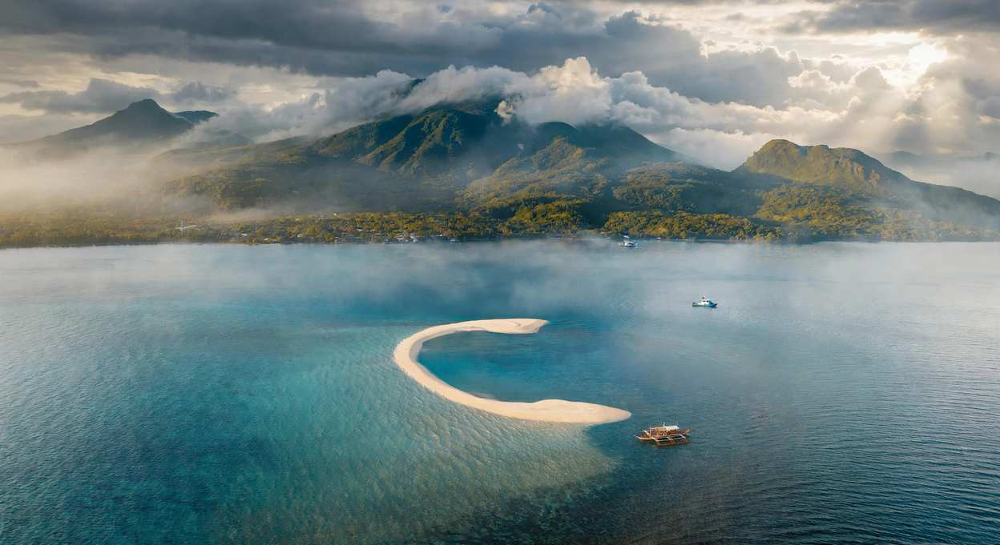

Camiguin is a small volcanic island off the north coast of Mindanao. You can drive all the way around it in about an hour, yet it packs in a sandbar, waterfalls, cold and hot springs, a cross standing in the sea over a sunken town and a volcano you can climb in a day. In 2026 The New York Times put it at No. 37 on its "52 Places to Go" list, the only Philippine destination to make it, and the province had its best year yet in 2025, with arrivals rising from about 288,600 to almost 398,000.
The island is still quiet by most standards. There are no big resorts crowding the shore and no traffic lights, and most sights are run by barangays and the province, with small fees. What takes planning is the trip there, the weather and the island's limited cash points.
This guide covers the three routes onto the island, how to get around, every major spot with its current fee, where to stay by area, the best months, a three-day itinerary and a sample budget.

Camiguin at a glance
- Where: Northern Mindanao, off the coast of Misamis Oriental; the capital is Mambajao
- Size: a ring road of about 64 kilometres circles the island
- Getting there: a one-hour flight from Cebu, the Balingoan to Benoni ferry, or the slow ferry from Jagna in Bohol
- Best months: February to May for dry weather and calmer seas
- Most fees: ₱50 to ₱75 per site, plus boat hire for the islands
- Cash: ATMs are in Mambajao only, so bring enough pesos
How to Get to Camiguin
Pick your route first, because each one shapes how many days you get on the island.
Fastest
Fly Cebu to Camiguin
Cebgo, Cebu Pacific's turboprop arm, flies the route in about an hour, with one or two flights a day. Seat-sale fares can dip to around ₱1,200 to ₱1,900 one way.
Most frequent
Balingoan to Benoni ferry
Several RoRo trips a day cross from Balingoan in Misamis Oriental to Benoni Port in Mahinog in about an hour to an hour and a half. Passenger fares run about ₱300 to ₱360.
Through Bohol
Jagna to Balbagon ferry
Super Shuttle sails from Jagna at 1:00 PM on Mondays, Wednesdays and Fridays, a crossing of about four and a half hours. Economy runs about ₱800 to ₱1,000.
Balingoan is a bus or van ride east of Cagayan de Oro, which makes the ferry the natural route if you are already in Northern Mindanao. Our Cagayan de Oro city and food guide is useful if you plan a night there first. For exact Bohol ferry timings and how to fit them into a short trip, see the Camiguin weekend routes and costs guide.
The visitor QR code
Camiguin's Smart Tourism Ordinance requires visitors to register and get a QR code before entering through its ports and airport. In 2025 a court injunction stopped the province from running the system while a case against the ordinance continued. Ask the Provincial Tourism Office whether registration is required for your dates, and if it is, register before you travel and save the code offline.
Getting Around the Island
Everything sits on or near the ring road, so the island is easy to navigate. A rented scooter costs about ₱350 to ₱450 a day and gives the most freedom. Fill the tank in Mambajao, as stations along the road are few. Multicabs run the ring road for around ₱25 a ride, and tricycles and habal-habal cover the short hops. There is no ride-hailing, so agree the fare before you go.
If you'd rather not drive, hire a multicab or van with a driver for a full day around the island. Your resort can usually arrange one, and splitting the cost among four to six people keeps it reasonable. Agree on the stops and the return time before setting off.
Things to Do in Camiguin
Sandbars, islets and reefs
- White IslandA crescent sandbar 10 to 15 minutes by banca from Yumbing, with Hibok-Hibok behind it. A boat for up to six costs about ₱550, plus an environmental fee of ₱50 to ₱75 each. Go early and at low tide, when the sand is widest. There is no shade, so bring an umbrella or rent one at the jump-off.
- Mantigue IslandA protected islet off Mahinog with a white beach, a small forest and the island's best snorkelling. Boats leave from the San Roque docking area for about ₱750, with a three-hour limit on the island. Expect an entrance fee of around ₱75, a snorkelling fee of about ₱75 and a guide fee of ₱300 for every four people in the sanctuary.
- Giant Clam SanctuaryA community-run sanctuary in Guinsiliban with over a thousand giant clams. Entrance and an environmental fee are small, and snorkelling over the clams costs extra. Pair it with Mantigue on the same morning.
- Sunken CemeteryA large cross in the sea off Bonbon, Catarman, marking the cemetery that slipped under the water after the eruptions of 1871. Viewing from the shore is free, and small boats take visitors out to the cross or to snorkel over the site. It is a classic sunset stop.
Waterfalls and springs
Katibawasan Falls near Mambajao drops about 70 metres into a cold pool ringed by ferns, with an entrance fee of about ₱75. Tuasan Falls in Catarman is shorter but more powerful. The pool is roped off from the base of the falls, and entry is also about ₱75. At Sto. Niño Cold Spring in Catarman, a large spring-fed pool with a sandy bottom and very clear water, entry is ₱50 to ₱75, with tables and huts for rent.
For the opposite temperature, Ardent Hot Springs in Mambajao has warm pools fed from the volcano, at their best in the evening when the air cools. Entry is around ₱50. A good day on the island often ends here.
Heritage and volcano walks
The Walkway to the Old Volcano in Catarman is a steep path up Mt. Vulcan lined with life-size Stations of the Cross. Allow an hour or so, and go early or late in the day to avoid the heat. Near the Sunken Cemetery, the Gui-ob Church Ruins are the coral-stone walls of a church destroyed in the same 1871 eruptions. They are free and take only a few minutes to see, but they help explain the cross offshore.
Mt. Hibok-Hibok, at 1,332 metres, is the island's best-known volcano and sits within the Mt. Timpoong–Mt. Hibok-Hibok Natural Monument, an ASEAN Heritage Park. Climbers need a DENR permit, about ₱200 per person, and a local guide, whose fee has been about ₱1,200 to ₱1,500 per group. The most-used trail starts at Ardent Hot Springs and takes three to five hours to the summit. It is a real climb, hot and steep, with rope sections on some routes, so start at dawn and carry plenty of water.
What to Eat
Camiguin's food is simple and local. In October the island's lanzones, called buahan here, are at their sweetest and are sold by the kilo along the roads. The festival built around the harvest is covered in our Lanzones Festival guide. Pastel, a soft bun filled with sweet yema custard, is the island's best-known pasalubong, and bakeries in Mambajao sell it by the box. Fresh fish, grilled or in a sour soup, is easy to find at carinderias, where a meal runs about ₱80 to ₱150.
Where to Stay
- Mambajao, Yumbing and AgohoThe north coast has the most resorts and restaurants, the ATMs, and the jump-off for White Island. It is the best base for a first trip.
- Catarman and BonbonThe west and southwest are quieter, close to the springs, the Old Volcano and the Sunken Cemetery sunsets. Fewer places to eat at night.
- Mahinog and GuinsilibanThe east side is handy for Benoni Port, Mantigue Island and the giant clams. It is a good choice if you arrive on a late ferry.
Basic rooms cost about ₱800 to ₱1,500 a night, and mid-range beach resorts about ₱2,800 to ₱5,000. Book ahead for Holy Week, the Lanzones Festival in October and the Christmas holidays, when rates climb.
When to Go
Best
February to May
The driest months and the calmest seas, which suit both the boat trips and the Hibok-Hibok climb. Holy Week brings the Panaad, when thousands of devotees walk around the island, so book early for that week.
Festival
October
The Lanzones Festival fills Mambajao with parades and concerts, and the fruit is everywhere. Afternoon showers are common, so keep the mornings for outdoor plans.
Plan around
November to January
Typhoon risk and rougher crossings can cancel ferries and flights. Book changeable tickets and leave a spare day at the end.
A Three-Day Camiguin Itinerary
- Day 1The west side
Arrive and check in. In the afternoon, swim at Sto. Niño Cold Spring, see Tuasan Falls, walk the Old Volcano before it gets dark, stop at the Gui-ob ruins and watch the sunset at the Sunken Cemetery.
- Day 2Sandbar and islands
Catch White Island at sunrise and low tide. Head east to Mahinog for Mantigue Island and the giant clams. Back in Mambajao, end the day at Ardent Hot Springs.
- Day 3Falls, pastel and departure
Visit Katibawasan Falls in the morning, pick up pastel in Mambajao, and leave time to reach the airport or port. If you have a fourth day, use it for the Hibok-Hibok climb.
How Much a Trip Costs
Once you are on the island, Camiguin is easy on the wallet. Here is a rough per-person guide for three days, sharing a room and boats with one to three others, not counting the trip to the island:
Practical Tips Before You Go
- Bring cashATMs are only in Mambajao and can run dry on weekends. Most sites, boats and carinderias take cash only.
- Check the tideWhite Island shrinks at high tide. Ask your boatman the night before for the best time.
- Protect the reefUse reef-safe sunscreen, don't stand on coral, and follow the guides at Mantigue and the clam sanctuary.
- Keep the last day looseFlights and ferries can be cancelled in bad weather, so avoid a tight connection right after your Camiguin dates.
Is Camiguin Worth It?
Yes, if you like your islands small and varied. In three days you can swim in cold and hot springs, stand on a sandbar under a volcano, snorkel a marine sanctuary and climb a mountain if you have the legs for it, all for modest fees. The trade-offs are the effort of getting there, patchy cash and a weather window that matters. Give it three or four nights, base yourself on the north coast, and you will see why it made the New York Times list.


Comments
No comments yet. Been here recently? Share a tip or ask a question.
Leave a Reply